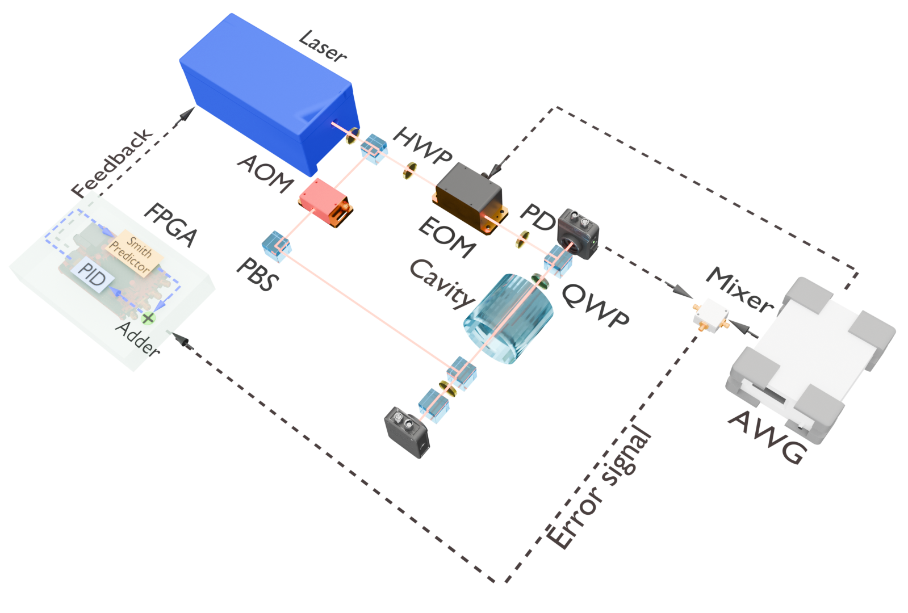
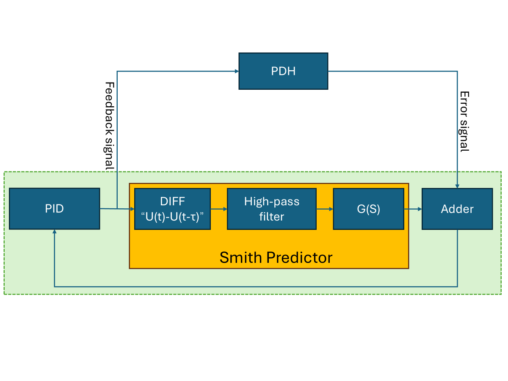
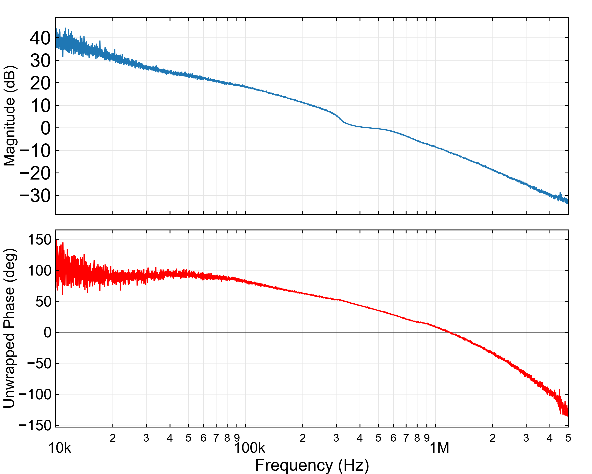
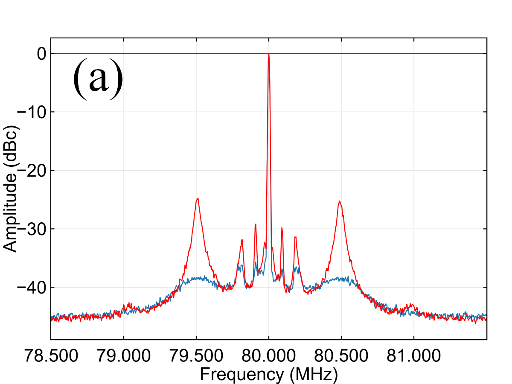
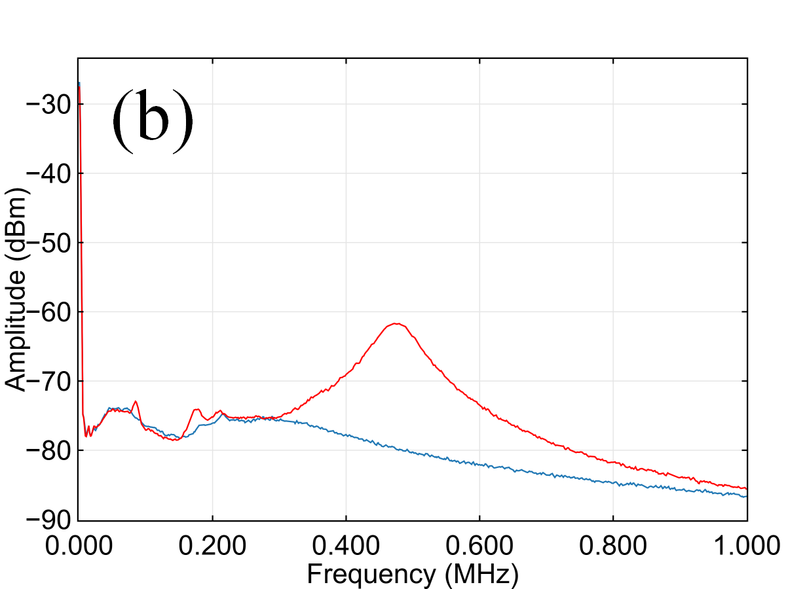
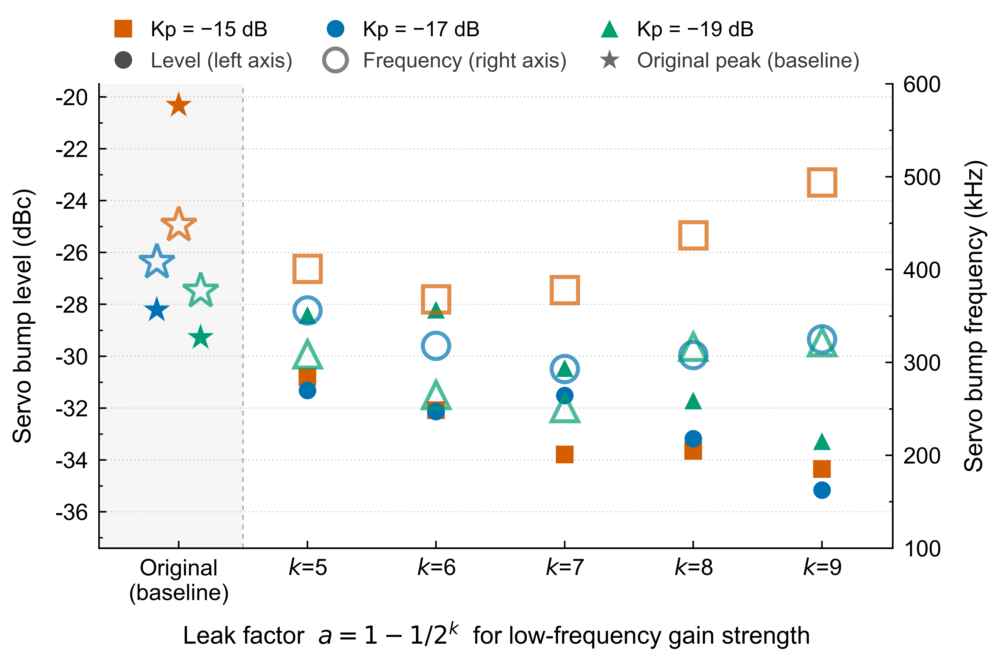
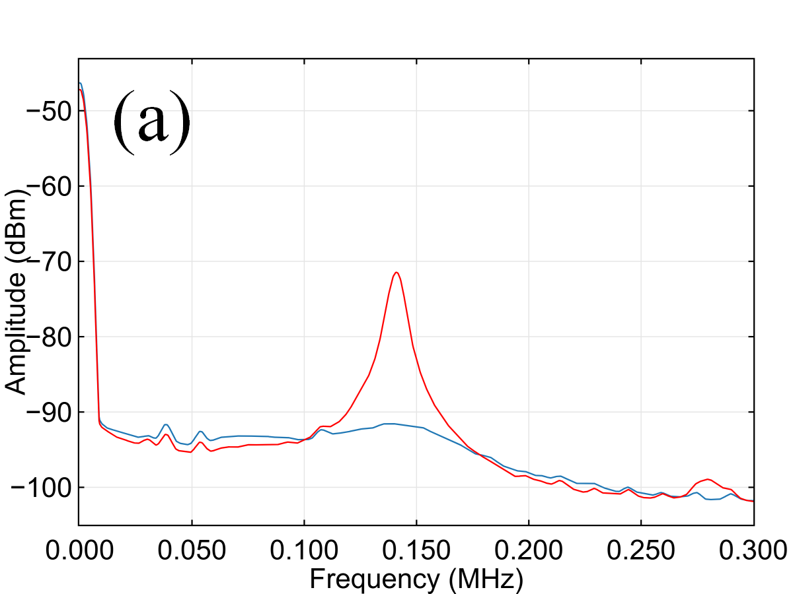
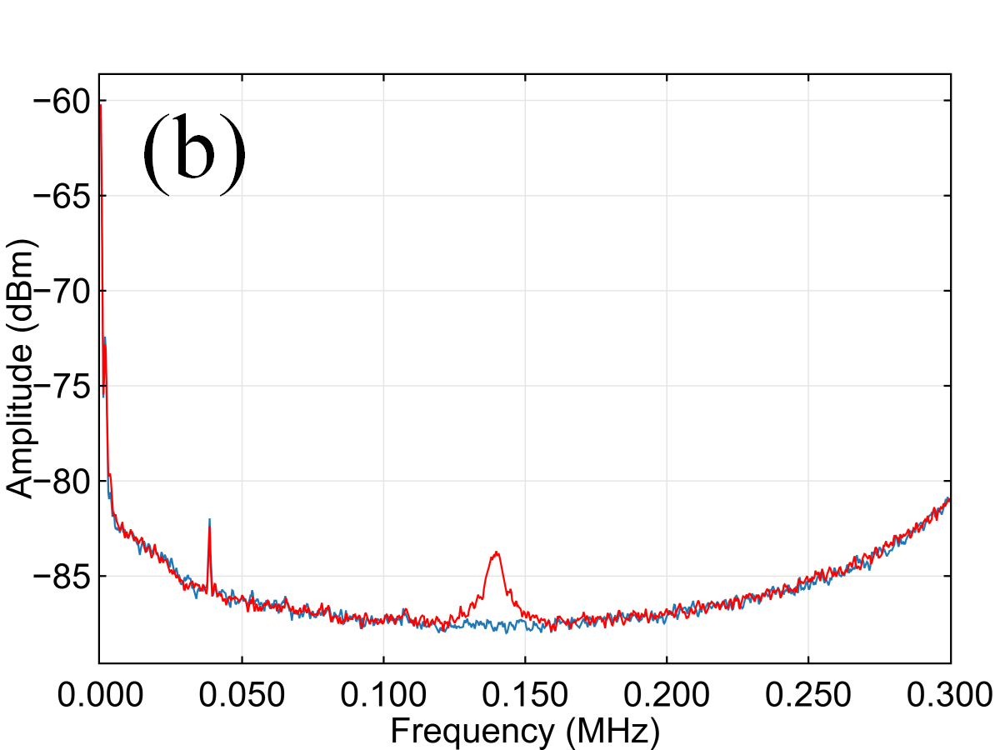

窄线宽激光器的预测式电子反馈控制
摘要
窄线宽激光器对于量子相干控制、量子精密度测量和量子信息科学中的多种关键原子-激光相互作用过程及光学装置至关重要。Pound-Drever-Hall（PDH）技术是窄线宽激光器频率稳定的标准方法，但其反馈环路中固有的时间延迟不可避免地会引入过大的相位噪声，通常称为伺服凸起（servo bumps）。以往的解决方案主要依赖于电子反馈控制环路之外的额外光学元件。本文提出并实现了一种基于 Smith 预测器的通用方法，完全在 PDH 反馈控制环路的电子部分内解决时间延迟问题。我们通过仅向环路中添加一个现场可编程门阵列（FPGA）控制器，系统地证明了其抑制相位噪声和减小伺服凸起的能力。这类方法经证明概念简洁、硬件开销极小、实际效果良好，并有望在未来得到广泛应用。
量子精密度测量与量子信息科学中的大量前沿研究和关键任务应用，从根本上依赖于高性能激光源 [1]。在这一严苛的应用场景中，窄线宽性能尤为重要，因为它是多种关键原子-激光相互作用过程和光学装置的决定性因素。 相关研究领域包括光学原子钟 [2, 3, 4, 5, 6]、光学核钟 [7, 8]、引力波检测 [9, 10]、超冷分子的高精密度相干合成 [11, 12, 13, 14]、暗物质搜寻 [15]、基本物理常数漂移的检测 [16]、量子接口 [17, 18, 19, 20, 21]以及原子与分子的量子仿真 [22, 23, 24, 25]。 特别是，Rydberg原子已发展成为量子传感 [26, 27, 28]和量子信息科学 [29, 30]中一种前景广阔的物理平台，窄线宽激光器在其中发挥着不可或缺的作用。在为量子逻辑门 [31, 32, 33]或电场检测 [34, 35]驱动相干基态-Rydberg跃迁时，抑制从低频到高频整个频谱范围内的激光相位噪声 [36]同样必不可少。
窄线宽激光器通常通过锁频至超稳光学参考谐振腔来实现，而 Pound-Drever-Hall（PDH）技术已成为鉴频与闭环控制的标准方法[37]。PDH 技术将激光频率相对参考谐振腔共振的失谐转换为高频电学误差信号，从而能够对激光频率进行高速反馈校正。从控制理论中的频域机理来看，信号在光路与电子电路中的传输延迟 会引入一个随频率 线性增加的附加相位滞后。其大小可表示为：。当噪声频率接近临界点 时，该延迟引起的相位滞后达到 。此时，系统原有的负反馈校正信号发生相位反转，转变为破坏系统稳定性的正反馈。换言之，反馈控制带宽实际上被限制在 的量级。 受控制环路中有限带宽这一物理极限的限制，若尽可能抑制低频噪声以提高控制增益，将导致高频段相位裕度显著恶化。此时环路不仅无法抑制带宽边缘附近的噪声，反而会放大系统对该噪声的响应。因此，这不可避免地会引入显著的宽带噪声放大峰，通常分布在数十 kHz 至数 MHz 范围内，即通常所称的伺服凸起。 由伺服凸起引起的中频和高频相位噪声在不同量子过程中表现出明显不同的有害机制。 例如，在原子量子比特的单量子比特门与双量子比特纠缠门中，研究表明，当未被抑制的相位涨落延伸至与驱动量子比特操作的拉比频率相当的频率时，会诱发额外的退相位与态泄漏 [36, 38, 39, 40, 41, 33]。
(a)
(b)

(c)

此前，对由伺服凸起引起的过量噪声的抑制主要依赖于使用谐振腔 [42, 43, 38, 39] 的直接光谱滤波、自注入锁定 [44, 45, 46]，或通常采用延迟光纤的前馈补偿技术 [47, 48, 49, 50, 51]。 然而，这些方法不可避免地需要在电子反馈环路之外引入额外的光学元件，这通常会限制可用的激光输出功率，或在系统的调谐与稳定化方面增加额外负担。 面向未来对窄线宽激光器的需求，我们提出并实现了一种通用方法，在 PDH 反馈控制环路的电子部分内完全解决时间延迟问题；该方法可解释为一种针对伺服凸起的纯电子抑制方案。 无需任何额外光学元件，该方法仅通过处理反馈环路内的误差信号和反馈信号，就能有效降低伺服凸起的幅度。由于伺服凸起是 PDH 锁定中运行的控制反馈环路的固有特性，并且尽管它本质上具有类噪声特性，但如果系统足够稳定且鲁棒，其特性随时间保持不变，那么预测性电子反馈控制便成为一种可行的解决方案。具体而言，通过将经典控制理论中的 Smith 预测器 [52] 与 PDH 技术相结合，并利用 FPGA 的实时信号处理能力，我们的工作使用单个控制器成功实现了对伺服凸起的有效抑制。
我们首先给出延迟补偿的理论分析以及如图 1(a) 所示方法的工作原理。 总环路延迟由两个不同分量 组成。 表示链路延迟，其从作用于激光器的控制信号开始，经过光路传播与 PDH 解调，直到所产生的误差信号在比例-积分-微分（PID）模块之前被反馈回来。 表示 PID 与激光器系统之间的前向传输延迟。 在拉普拉斯域中，令 表示复频率变量，并令 表示激光器系统接收到的控制信号。由于延迟 ，PID 控制器输出的信号在数学上等效于 。假设激光频率精确跟随 的控制，则 PDH 模块的输出变为 ，其中 表示其理想的无延迟传递函数。随后，该信号经历延迟 ，物理生成的误差信号可表示为 。 我们将 Smith 预估器引入环路，并使其与激光频率稳定过程无缝结合。PID 输出 分为两路：主路照常驱动激光器系统，而旁路则直接馈入 Smith 预估器。在内部，预估器利用 的已知模型进行并行计算，并给出差分补偿信号 。 加法器将受延迟 影响的物理信号与补偿信号 相加。理想情况下，加法器的输出 恰好等于 ，从而在数学上抵消实际物理信号 。最终，返回 PID 模块的补偿后反馈信号恢复为 。 因此，通过更新整个系统的电子与信号处理部分，时间延迟得到有效补偿，因而伺服凸峰将被抑制。
所提方法的实验装置如图 1(b) 所示，并包含光拍频测量，以独立评估系统的相位噪声。具体而言，来自超稳光学谐振腔的透射光与声光调制器（AOM）产生的频移一阶衍射光进行光拍频。AOM 以 80 MHz 的恒定频率驱动。在这些实验条件下，所得拍频信号的载波功率波动严格保持在 1 dB 以下，从而为后续噪声表征建立稳定基线。我们选择利用频率响应分析仪（FRA）的闭环注入法，以获得 PDH 系统高信噪比（SNR）的频率响应特性。由于系统在低频段具有极高的开环增益，有效测量频段设为 10 kHz 至 5 MHz。关于用于消除设备固有延迟的微扰信号注入与双通道同步采集的详细实验流程，见补充材料。
基于已表征的系统响应，采用数字方式实现 Smith 预测器以补偿纯时间延迟，其逻辑框图如图 1(c) 所示。绿色阴影区域内的操作在 FPGA 的内部架构中执行。在该数字流水线中，PID 的输出被分为两条并行路径。主路径承载有效反馈信号，该信号经物理 PDH 链路传输至激光器的频率控制端口，以维持锁频。同时，第二路径被送入内部环形缓冲区，以计算瞬时控制量与其延迟对应量之间的差分信号，其中。 由于预测器模型失配会引入与成正比的残差，因此插入截止频率为 20 kHz 的二阶高通滤波器，以在低频段限制该残差。 与被控对象模型卷积后，滤波后的预测信号被叠加到原始物理 PDH 误差信号上。该合成最终产生延迟补偿后的误差信号，随后将其反馈至 PID，从而稳健地闭合补偿环路。
在 FPGA 的数字逻辑实现中，上述预测过程基于内部寄存器堆完成。系统时钟频率设为 125 MHz。预测器通过深度为的移位寄存器缓存历史数据，以模拟系统的纯时间延迟环节，支持约 8.2 的最大延迟补偿。 假设预测器模型本身的计算时间可忽略不计，则可通过在特定深度提取历史数据来重建时间延迟状态。例如，当测得的反馈链路延迟为 200 ns、前向传输延迟为 208 ns 时，对应的时钟周期数分别为 25 和 26。系统随后可按深度寻址并提取寄存器数据，作为模拟延迟变量。该值用于后续的差分与求和运算，从而在数字域内高效实现无延迟误差信号的重建。

这里，设计 Smith 预估器的核心是对包含激光器在内的 PDH 反馈控制环路的动态响应进行准确建模。因此，首要步骤是表征幅频响应与相频响应。 在实验上，该测试的做法是：在环路内将已知幅值与频率的扫频信号注入激光器反馈端，同时监测误差信号。通过分析误差信号与反馈信号、注入信号组合之间的传递关系，即可得到系统的幅值响应曲线与相位响应曲线。 图 2给出了一组实测的幅频响应曲线与相频响应曲线。PDH 稳频环路呈现明显的低通特性，其幅值衰减行为与一阶积分系统高度接近。由相频响应曲线可知，系统相位在低频段稳定在 附近。考虑到负反馈设计本身引入的 相移，以及开环系统在低频段呈渐近 相位滞后的特性，二者共同作用使这些频率处的相位为 。这与幅频曲线在低频处呈现的高增益特性相一致。 在更高频率区域，系统中嵌入的时间延迟使相位滞后显著增大，且该滞后随频率线性增加。


基于纯时间延迟相位公式的估计：
| (1) |
其中 取自图 2(b)， 由此推得 FPGA 之外环路的延迟 = 106 ns，该延迟代表 FPGA 端口与激光器之间的链路。 此外，考虑到实验中采用的基于 FPGA 的数字控制器在执行 PID 算法时会引入额外的数字计算延迟 ，在构建完整预估模型时，必须将 叠加到总延迟上以进行完整补偿。 针对系统的频率响应特征，拟合模型在低频段引入反相漏积分器，并结合整体的一阶低通滤波结构。
将所提方法在实际 PDH 稳频系统中实施的一组典型实验结果（如图 1(b) 所示）展示于图 3中。如图 3(a) 所示，传统 PDH 环路（红色曲线）在偏移频率 处表现出明显的伺服凸起。我们观察到， 和 处的尖锐尖峰归因于我们装置中固有的现场可编程门阵列（FPGA）噪声。在实施 Smith 预测器（蓝色曲线）后，这些伺服凸起被有效抑制，在峰值位置实现了 的降低。此外，还测量了锁定激光器误差信号的频谱，图 3(b) 表明其在伺服凸起频率处的幅度被衰减了 。这些结果与图 3(a) 中观测到的射频（RF）频谱测量结果一致，并表明该系统的模型已成功构建。在实际中仍存在非零残差延迟，因为数字流水线本身需要有限个时钟周期；其对可达到的抑制效果的影响在补充材料中进行了量化。

我们进一步研究 Smith 预测器的性能如何取决于建模与实现的关键参数。锁定增益以及预测模型与实际系统特性之间的偏差程度会影响伺服凸起的抑制。具体而言，预测模型中一阶反相漏积分级的泄漏强度设置为 ，其中 越大，低频增益越高，因而匹配越好。我们在三个锁定增益（ dB）下进行了测量，结果如图 4 所示。 最左列汇总了伺服凸起峰的原始状态，包括激光系统在三种略有不同的条件下工作时的 -20.33 dB @ 448 kHz、-28.22 dB @ 408 kHz 和 -29.28 dB @ 377 kHz。三组的电平均随 从小值增大而降低，在 处分别达到 -34.35 dB、-35.16 dB 和 -33.28 dB。在 较小时，Kp = -19 dB 组表现出最弱的抑制，其电平与其原始状态相当。同时，伺服凸起峰的频率通常随 的变化而发生位置偏移。


作为所提出的窄线宽激光器预测电子反馈控制方法的应用示例，我们利用里德堡电磁诱导透明（EIT）[34, 35]开展了低频电场量子传感实验，其中探测激光器采用该方法稳频。图 5 比较了采用传统 PDH 稳频和所提方法时系统的信号。从图 5(a) 和 5(b) 中的红色曲线可以看出，传统方法在基带误差信号和探测激光器的里德堡 EIT 透射信号中均在 140 kHz 附近表现出明显的噪声峰。此外，轮廓分析根据 110 kHz 至 160 kHz 频段内两个频谱的离散幅度数据点，揭示了误差信号与里德堡 EIT 信号的频谱包络之间具有令人信服的正相关（Pearson ）。 这种共变是预期的，因为里德堡 EIT 过程的噪声包含探测激光器频率噪声的贡献。启用 Smith 预测器时两个通道同时受到抑制，也提供了证据表明里德堡 EIT 信号中降低的噪声峰来源于伺服峰。 具体而言，里德堡 EIT 信号中 3.7 dB 的初始噪声峰被消除并降至噪声底水平。因此，如果目标电信号的频率位于 140 kHz 伺服峰附近，采用所提方法可将检测的信噪比（SNR）提高 2.46 dB。更多细节见补充材料。
综上，我们已证明，PDH 稳频中有限环路延迟带来的伺服峰问题可以仅通过电子反馈路径得到有效缓解。通过在单个 FPGA 控制器中嵌入 Smith 预测器，基于模型的补偿重建出近乎无延迟的误差信号，并放宽了由总环路延迟设定的带宽限制，且无需增加光学元件或牺牲可用激光输出功率。以 80 MHz 光学拍频信号为参考进行测量，该预测器使伺服峰降低 14 dB，使锁定状态误差信号降低 18 dB。将其部署于基于里德堡的电场传感器中，可将 140 kHz 附近 3.7 dB 的凸峰抑制至探测器噪声底，使信噪比提高 2.46 dB。该方法无需修改被控对象，可直接迁移至光钟、相干光谱及其他受延迟限制的窄线宽平台。
作者衷心感谢中国科学院战略性先导科技专项（批准号 XDB1690300）、国家重点研发计划（批准号 2024YFB4504002）以及中国载人航天工程空间应用系统的资助支持。
References
- [1] S. Haroche, PRX Quantum 6, 010102 (2025).
- [2] A. D. Ludlow, M. M. Boyd, J. Ye, E. Peik, and P. O. Schmidt, Rev. Mod. Phys. 87, 637 (2015).
- [3] S. M. Brewer, J.-S. Chen, A. M. Hankin, E. R. Clements, C. W. Chou, D. J. Wineland, D. B. Hume, and D. R. Leibrandt, Phys. Rev. Lett. 123, 033201 (2019).
- [4] T. Bothwell, D. Kedar, E. Oelker, J. M. Robinson, S. L. Bromley, W. L. Tew, J. Ye, and C. J. Kennedy, Metrologia 56, 065004 (2019).
- [5] N. Ohmae, M. Takamoto, Y. Takahashi, M. Kokubun, K. Araki, A. Hinton, I. Ushijima, T. Muramatsu, T. Furumiya, Y. Sakai, N. Moriya, N. Kamiya, K. Fujii, R. Muramatsu, T. Shiimado, and H. Katori, Adv. Quantum Technol. 4, 2100015 (2021).
- [6] Y. Lin, Q. Wang, F. Meng, S. Cao, Y. Wang, Y. Li, Z. Sun, B. Lu, T. Yang, B. Lin, A. Zhang, F. Fang, and Z. Fang, Metrologia 58, 035010 (2021).
- [7] B. Huang, G. Yan, Q. Xiao, W. Bu, C. Zhao, Z. Zhang, C. Yan, Z.-A. Chen, P. Zhang, G. Penyazkov, Z. Zhan, L. Yan, Y. Wang, L. Li, S. Li, D. Jiang, X. Qian, X. Liu, Q. He, T. Sun, H. Tian, B. Lu, N. Ma, J. Li, Y. Wu, Q. Gong, Y. Li, H. Shi, X. Li, L. Ma, S. Zhu, Y. Mo, J. Lin, L. You, Y. Lin, X. Zhang, Y. Hang, L. Su, and S. Ding, Nature (2026).
- [8] L. Toscani De Col, T. Riebner, I. Morawetz, F. Schneider, N. Sempelmann, J. Schlachet-Lépinay, F. Schaden, M. Bartokos, G. A. Kazakov, K. Beeks, B. Gerstenecker, M. Pimon, S. Lahs, A. Hellerschmied, T. Lercher, H. Denker, J. Premper, A. Niessner, M. Matus, M. Čížek, O. Číp, V. Lal, G. Zitzer, V. Petrov, J. Tiedau, M. V. Okhapkin, E. Peik, and T. Schumm, Nature (2026).
- [9] The LIGO Scientific Collaboration, Class. Quantum Grav. 32, 074001 (2015).
- [10] B. P. Abbott, R. Abbott, T. D. Abbott, et al. (LIGO Scientific Collaboration and Virgo Collaboration), Phys. Rev. Lett. 116, 061102 (2016).
- [11] T. Takekoshi, L. Reichsöllner, A. Schindewolf, J. M. Hutson, C. R. Le Sueur, O. Dulieu, F. Ferlaino, R. Grimm, and H.-C. Nägerl, Phys. Rev. Lett. 113, 205301 (2014).
- [12] P. K. Molony, P. D. Gregory, Z. Ji, B. Lu, M. P. Köppinger, C. R. Le Sueur, C. L. Blackley, J. M. Hutson, and S. L. Cornish, Phys. Rev. Lett. 113, 255301 (2014).
- [13] M. Guo, B. Zhu, B. Lu, X. Ye, F. Wang, R. Vexiau, N. Bouloufa-Maafa, G. Quéméner, O. Dulieu, and D. Wang, Phys. Rev. Lett. 116, 205303 (2016).
- [14] X. He, K. Wang, J. Zhuang, P. Xu, X. Gao, R. Guo, C. Sheng, M. Liu, J. Wang, J. Li, G. V. Shlyapnikov, and M. Zhan, Science 370, 331 (2020).
- [15] T. Kobayashi, A. Takamizawa, D. Akamatsu, A. Kawasaki, A. Nishiyama, K. Hosaka, Y. Hisai, M. Wada, H. Inaba, T. Tanabe, and M. Yasuda, Phys. Rev. Lett. 129, 241301 (2022).
- [16] S. Blatt, A. D. Ludlow, G. K. Campbell, J. W. Thomsen, T. Zelevinsky, M. M. Boyd, J. Ye, X. Baillard, M. Fouché, R. Le Targat, A. Brusch, P. Lemonde, M. Takamoto, F.-L. Hong, H. Katori, and V. V. Flambaum, Phys. Rev. Lett. 100, 140801 (2008).
- [17] B. Casabone, A. Stute, K. Friebe, B. Brandstätter, K. Schüppert, R. Blatt, and T. E. Northup, Phys. Rev. Lett. 111, 100505 (2013).
- [18] M. Lee, K. Friebe, D. A. Fioretto, K. Schüppert, F. R. Ong, D. Plankensteiner, V. Torggler, H. Ritsch, R. Blatt, and T. E. Northup, Phys. Rev. Lett. 122, 153603 (2019).
- [19] J. P. Covey, A. Sipahigil, S. Szoke, N. Sinclair, M. Endres, and O. Painter, Phys. Rev. Appl. 11, 034044 (2019a).
- [20] J. P. Covey, A. Sipahigil, and M. Saffman, Phys. Rev. A 100, 012307 (2019b).
- [21] W. Huie, S. G. Menon, H. Bernien, and J. P. Covey, Phys. Rev. Research 3, 043154 (2021).
- [22] C. Gross and I. Bloch, Science 357, 995 (2017).
- [23] C. Kokail, C. Maier, R. Van Bijnen, T. Brydges, M. K. Joshi, P. Jurcevic, C. A. Muschik, P. Silvi, R. Blatt, C. F. Roos, and P. Zoller, Nature 569, 355 (2019).
- [24] M. K. Joshi, A. Elben, B. Vermersch, T. Brydges, C. Maier, P. Zoller, R. Blatt, and C. F. Roos, Phys. Rev. Lett. 124, 240505 (2020).
- [25] S. L. Cornish, M. R. Tarbutt, and K. R. A. Hazzard, Nat. Phys. 20, 730 (2024).
- [26] C. L. Degen, F. Reinhard, and P. Cappellaro, Rev. Mod. Phys. 89, 035002 (2017).
- [27] N. Schlossberger, N. Prajapati, S. Berweger, A. P. Rotunno, A. B. Artusio-Glimpse, M. T. Simons, A. A. Sheikh, E. B. Norrgard, S. P. Eckel, and C. L. Holloway, Nat. Rev. Phys. 6, 606 (2024).
- [28] H. Zhang, Y. Ma, K. Liao, W. Yang, Z. Liu, D. Ding, H. Yan, W. Li, and L. Zhang, Sci. Bull. 69, 1515 (2024).
- [29] M. Saffman, T. G. Walker, and K. Mølmer, Rev. Mod. Phys. 82, 2313 (2010).
- [30] M. Saffman, arXiv:2608.30783 [quant-ph] (2026).
- [31] K. M. Maller, M. T. Lichtman, T. Xia, Y. Sun, M. J. Piotrowicz, A. W. Carr, L. Isenhower, and M. Saffman, Phys. Rev. A 92, 022336 (2015).
- [32] Z. Fu, P. Xu, Y. Sun, Y.-Y. Liu, X.-D. He, X. Li, M. Liu, R.-B. Li, J. Wang, L. Liu, and M.-S. Zhan, Phys. Rev. A 105, 042430 (2022).
- [33] S. A. Norrell, Y. Shen, M. Saffman, and M. Otten, arXiv:2605.19245 [quant-ph] (2026).
- [34] S. Jin, X. Fan, X. Wang, Y. Song, and Y. Sun, Chin. Phys. Lett. 42, 110304 (2025).
- [35] D. Wang, S. Jin, X. Fan, H. Li, J. Liu, J. Huang, G. Zeng, and Y. Sun, Photonics Res. 14, 4371 (2026).
- [36] Y. Sun and C. Zhang, Phys. Rev. A 89, 032516 (2014).
- [37] R. W. P. Drever, J. L. Hall, F. V. Kowalski, J. Hough, G. M. Ford, A. J. Munley, and H. Ward, Appl. Phys. B 31, 97 (1983).
- [38] S. de Léséleuc, D. Barredo, V. Lienhard, A. Browaeys, and T. Lahaye, Phys. Rev. A 97, 053803 (2018).
- [39] H. Levine, A. Keesling, A. Omran, H. Bernien, S. Schwartz, A. S. Zibrov, M. Endres, M. Greiner, V. Vuletić, and M. D. Lukin, Phys. Rev. Lett. 121, 123603 (2018).
- [40] X. Jiang, J. Scott, M. Friesen, and M. Saffman, Phys. Rev. A 107, 042611 (2023).
- [41] Y. Sun, Phys. Rev. Appl. 20, L061002 (2023).
- [42] J. Hald and V. Ruseva, J. Opt. Soc. Am. B 22, 2338 (2005).
- [43] N. Akerman, N. Navon, S. Kotler, Y. Glickman, and R. Ozeri, New J. Phys. 17, 113060 (2015).
- [44] L. Krinner, K. Dietze, L. Pelzer, N. Spethmann, and P. O. Schmidt, Opt. Express 32, 15912 (2024).
- [45] I. S. Panyaev, P. A. Itrin, D. A. Korobko, and A. A. Fotiadi, J. Lightwave Technol. 42, 2928 (2024).
- [46] J. Zhang and W. Liang, Opt. Lett. 50, 776 (2025).
- [47] L. Li, W. Huie, N. Chen, B. DeMarco, and J. P. Covey, Phys. Rev. Appl. 18, 064005 (2022).
- [48] Y.-X. Chao, Z.-X. Hua, X.-H. Liang, Z.-P. Yue, L. You, and M. K. Tey, Optica 11, 945 (2024).
- [49] B. P. Maddox, J. M. Mortlock, T. R. Hepworth, A. P. Raghuram, P. D. Gregory, A. Guttridge, and S. L. Cornish, Phys. Rev. Lett. 133, 253202 (2024).
- [50] T. Denecker, Y. T. Chew, O. Guillemant, G. Watanabe, T. Tomita, K. Ohmori, and S. de Léséleuc, Phys. Rev. A 111, 042614 (2025).
- [51] T. Nakamura, Y. Liu, N. Jin, H. Cheng, C. McLemore, N. Hoghooghi, P. Rakich, and F. Quinlan, APL Photonics 10, 126120 (2025).
- [52] O. J. M. Smith, Chem. Eng. Prog. 53, 217 (1957).